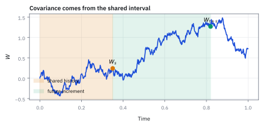
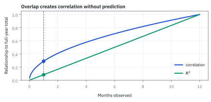

9.4 Worked Computation — $\mathbb E_0[W_{t+s}W_s]$
คำนวณผลคูณของค่าจากสองเวลาโดยไม่เดาเส้นทางทั้งเส้น
กองทุนหนึ่งมีกำไรขาดทุนแกว่งปีละ \$12 ล้าน มกราคมกำไร 2 ล้าน ผลงานเดือนแรกอธิบายผลทั้งปีได้กี่เปอร์เซ็นต์ และตอนนี้ควรคาดกำไรทั้งปีเท่าไร?
เฉลย: correlation ของเดือนแรกกับทั้งปีคือ √(1/12) = 0.289 อธิบายได้แค่ 8.3% และที่อธิบายได้ก็เพราะมกราคมอยู่ในผลทั้งปีอยู่แล้ว คาดกำไรทั้งปี \$2 ล้าน แต่ยังคลาดได้หนึ่ง standard deviation (SD) 11.49 ล้าน มกราคมบอกอะไรเกี่ยวกับกุมภาพันธ์ถึงธันวาคมไม่ได้เลย
ศัพท์ที่ใช้ในหัวข้อนี้
- covariance
- ตัวเลขที่วัดว่าตัวแปรสองตัวขยับร่วมกันในหน่วยผลคูณของทั้งคู่ ใช้สร้าง portfolio risk และหา shared randomness ระหว่างสองเวลา
- Standard Brownian Motion (SBM)
- Brownian motion ที่เริ่มจาก 0 ไม่มี drift และมี variance เท่ากับเวลา ใช้เป็น process มาตรฐานสำหรับคำนวณ covariance ข้ามเวลา
- expected value
- probability-weighted average ของ outcomes ที่เป็นไปได้ ใช้หาค่าเฉลี่ยและ second moments ของ Brownian levels
- correlation
- covariance ที่หารด้วย standard deviations ทั้งสองจนไม่มีหน่วยและอยู่ระหว่าง -1 ถึง 1 ใช้เทียบความสัมพันธ์ข้าม quantities ที่ scale ต่างกัน
- coefficient of determination ($R^2$)
- correlation squared ใน simple linear regression ใช้วัดสัดส่วน variance ของตัวแปรหนึ่งที่ linear projection บนอีกตัวอธิบายได้
- overlapping window
- ช่วงวัดผลสองช่วงที่แชร์ observations หรือเวลาเดียวกัน ใช้เตือนว่าความสัมพันธ์อาจเกิดจากการนับข้อมูลซ้ำ ไม่ใช่ predictive signal
- linear projection
- ค่าพยากรณ์เชิงเส้นที่ลด mean squared error ให้ต่ำสุด ใช้แปลง covariance เป็น forecast coefficient
- hedge
- position ที่เปิดเพื่อลด exposure หรือความเสี่ยงของ position หลัก ใช้ covariance คำนวณขนาดที่ชดเชยการขยับร่วมกัน
- Monte Carlo simulation
- การสุ่ม scenarios จำนวนมากจาก model แล้วเฉลี่ยผล ใช้ตรวจสูตร covariance และ correlation ด้วยตัวเลขที่ทำซ้ำได้
- P&L volatility budget
- standard deviation เป้าหมายของกำไรขาดทุนตลอด horizon ที่ desk ยอมรับ ใช้แปลง Brownian scale เป็นจำนวนเงิน USD
- United States (US) equity fund
- กองทุนที่ลงทุนในหุ้นตลาดสหรัฐฯ ใช้เป็นตัวอย่างการวัด cumulative P&L และประเมินผล manager เป็น USD
- investment committee
- คณะผู้กำกับการลงทุนและความเสี่ยงของกองทุน ใช้ตัดสินใจเรื่อง mandate, capital และการประเมินผล manager
สัญลักษณ์ที่ใช้ในหัวข้อนี้
| สัญลักษณ์ | ความหมาย | หน่วย |
|---|---|---|
| $W_t$ | SBM ที่เวลา $t$ | $\sqrt{\mathrm{year}}$ เมื่อวัดเวลาเป็นปี |
| $\mathbb E_0[\cdot]$ | expectation จากข้อมูลเริ่มต้น $\mathcal F_0$ ซึ่งเป็น trivial information ในโจทย์นี้ | ตาม quantity ด้านใน |
| $s,t$ | เวลาแรกและความยาวจากเวลาแรกถึงเวลาหลัง | ปี |
| $u,v$ | เวลาคู่หนึ่งบน Brownian path | ปี |
| $\operatorname{Cov}(W_u,W_v)$ | covariance ของ Brownian levels ที่เวลา $u$ และ $v$ | ปี |
| $\rho_{u,v}$ | correlation ของ Brownian levels ที่เวลา $u$ และ $v$ | ไม่มีหน่วย |
| $P_t$ | P&L สะสมของ fund ถึงเวลา $t$ | USD |
| $\sigma_P$ | annual P&L volatility scale | USD ต่อ $\sqrt{\mathrm{year}}$ |
ที่มาที่ไป: คำถามที่ผู้บริหารถามทุกไตรมาส
คำถามคือผลงานเดือนแรกบอกอะไรเกี่ยวกับทั้งปีได้บ้าง ซึ่งฟังดูเหมือนคำถามเชิงบริหาร แต่จริง ๆ มีคำตอบทางคณิตศาสตร์ที่ชัดเจน
สิ่งที่ต้องหาคือความเกี่ยวพันระหว่างค่าที่คนละเวลาของกระบวนการเดียวกัน และวิธีที่ตรงที่สุดคือแยกค่าที่เวลาหลัง ออกเป็นส่วนที่ใช้ร่วมกับเวลาแรก บวกส่วนที่เกิดหลังจากนั้น
เทคนิคการแยกก้อนที่รู้ออกจากก้อนที่ยังไม่เกิดนี้ จะถูกใช้ซ้ำตลอดบทที่เหลือ
คำตอบที่ได้สะอาดจนน่าประหลาด คือความเกี่ยวพันขึ้นกับความยาวของช่วงเวลาที่ทั้งสองใช้ร่วมกันเท่านั้น
ประวัติความเป็นมา: จากปัญหาอนุกรมเวลาของ Yule สู่ covariance kernel ของ Kolmogorov
ในปี 1926 นักสถิติชาวอังกฤษ George Udny Yule ตีพิมพ์บทความชื่อดังตั้งคำถามว่า ทำไมอนุกรมเวลาทางเศรษฐกิจถึงมักแสดง correlation ลวงที่สูงผิดปกติ ทั้งที่สองสิ่งไม่ได้มีเหตุผลเชื่อมโยงกันเลย สาเหตุสำคัญประการหนึ่งคือ อนุกรมเวลาเหล่านั้นเกิดจากการสะสมผลกระทบในอดีต (cumulative sums) ทำให้ข้อมูลสองตำแหน่งเวลาใช้ประวัติศาสตร์ร่วมกันเป็นช่วงยาว
ต่อมาในทศวรรษ 1930 ถึง 1940 Andrey Kolmogorov และ Norbert Wiener ได้พัฒนาทฤษฎี stochastic process เชิงคณิตศาสตร์และแสดงว่า Gaussian process ทุกตัวถูกกำหนดโครงสร้างอย่างสมบูรณ์ด้วย mean function และ covariance function หรือที่เรียกว่า covariance kernel
สำหรับ Brownian motion การที่ covariance kernel มีค่าเท่ากับ $\min(u,v)$ พอดี สะท้อนความจริงพื้นฐานว่าความเกี่ยวพันระหว่างสองเวลาเกิดจาก ส่วนประวัติศาสตร์ที่ใช้ร่วมกัน ล้วน ๆ ไม่ใช่เกิดจากการที่อดีตส่งพลังวิเศษไปทำนายอนาคต การเข้าใจสูตรนี้จึงเป็นวัคซีนป้องกันไม่ให้ quant หลงกลตัวเลข correlation ในหน้าต่างเวลาที่ทับซ้อนกัน
โจทย์เป็น expectation ของผลคูณ ไม่ใช่ผลคูณของ expectations
Brownian level ณ เวลาแรกอยู่ภายใน level ณ เวลาหลัง เพราะจุดหลังสะสม randomness จาก shared history มาด้วย ทั้งคู่จึงไม่ independent แม้ future increment หลังเวลาแรกจะ independent จากอดีต
แล้วเอาไปใช้ทำอะไรได้จริงบ้าง
การหาความเกี่ยวพันระหว่างค่าที่คนละเวลา ตอบคำถามที่ผู้บริหารถามทุกไตรมาส
ใช้ตอบว่าผลงานเดือนแรกบอกอะไรเกี่ยวกับทั้งปี ซึ่งเป็นคำถามที่มีคำตอบเป็นตัวเลขได้จริง
ใช้แยกความเสี่ยงของทั้งปีออกเป็นส่วนที่เกิดแล้วกับส่วนที่ยังไม่เกิด เพื่อวางแผนที่เหลือของปี
ใช้เป็นเทคนิคพื้นฐานของการคำนวณในบทถัดไป คือแยกก้อนที่รู้ออกจากก้อนที่ยังสุ่ม
Figure 9.4a — สองเวลาใช้เส้นทางร่วมกันจนถึงเวลาที่มาก่อน

ช่วงสีอำพันจาก 0 ถึง $s$ อยู่ใน Brownian levels ทั้งสอง ส่วนช่วงสีเขียวจาก $s$ ถึง $t+s$ อยู่เฉพาะจุดหลัง; covariance จึงเท่ากับ randomness ของช่วงร่วม
แปล level จุดหลังให้เป็นภาษาของ increments
นิยาม Brownian motion ให้เครื่องมือกับ increments จึงบวกและลบ $W_s$ เพื่อแยกก้อนที่รู้ ณ เวลา $s$ ออกจากก้อนอนาคต
ขั้นที่ 1 — แยก shared history กับ future increment
จะหาค่าเฉลี่ยของผลคูณจากสองเวลา อย่าไปคิดทั้งเส้นทาง ให้แยกค่าที่เวลาหลังออกเป็นส่วนที่ใช้ร่วมกับเวลาแรก บวกส่วนที่เกิดหลังจากนั้น จุดที่เลือกแยกไม่ใช่เรื่องบังเอิญ มันคือจุดเดียวที่ทำให้สองก้อนเป็นอิสระต่อกัน
สามบรรทัดแรกคือการบวกและลบ $W_s$ ครั้งเดียว ซึ่งไม่เปลี่ยนค่าอะไรเลย จึงเป็นจริงบนทุกเส้นทาง ไม่ใช่การประมาณ
สี่บรรทัดล่างอธิบายว่าทำไมถึงแยกตรงนี้ ไม่ใช่ที่อื่น: ก้อนล่างสุดคือส่วนที่เวลาแรกกับเวลาหลังใช้ร่วมกัน
ส่วนก้อนบนคือส่วนที่เกิดขึ้นหลังเวลาแรกไปแล้ว ซึ่งสมบัติข้อแรกของ Brownian motion รับประกันว่าไม่เกี่ยวกับอะไรที่เกิดก่อนหน้านั้น
การแยกให้ก้อนหนึ่งเป็นอิสระจากอีกก้อน คือสิ่งที่ทำให้ขั้นถัดไปคำนวณได้
ขั้นที่ 2 — กระจายผลคูณด้วย linearity
เมื่อแยกได้แล้ว ก็กระจายผลคูณออกเป็นสองพจน์ สามบรรทัดนี้ยังไม่ใช้สมบัติพิเศษของ Brownian motion เลยแม้แต่ข้อเดียว มันเป็นแค่การกระจายวงเล็บ ซึ่งเป็นเหตุผลที่ควรทำก่อนเสมอ
เป้าหมายคือค่าเฉลี่ยของผลคูณของค่าที่สองเวลาบนเส้นทางเดียวกัน ซึ่งพันกันอยู่ เพราะค่าที่เวลาหลังมีค่าที่เวลาแรกอยู่ข้างใน เทคนิคคือแทนการแยกของขั้นที่ 1 เข้าไป แล้วกระจายวงเล็บ ได้สองพจน์ คือพจน์ไขว้ กับกำลังสองของค่าที่เวลาแรก
การเฉลี่ยทีละพจน์ใช้กฎบวกค่าเฉลี่ยของหัวข้อ 1.3 ซึ่งใช้ได้เสมอ ไม่ต้องขอ independence สังเกตว่าถึงตรงนี้เรายังไม่ได้ใช้สมบัติอะไรของ Brownian motion เลย มันจะถูกใช้ในขั้นถัดไป ตอนคำนวณพจน์ไขว้
ทำให้ cross term หายด้วย tower property
ย้ายจุดยืนไปเวลา $s$ ก่อน ณ จุดนั้น $W_s$ รู้ค่าแล้วจึงดึงออกจาก conditional expectation ได้ และ future increment ยังมี conditional mean 0
ขั้นที่ 3 — คำนวณ cross term ทีละชั้น
พจน์ไขว้ดูน่ากลัวที่สุด แต่จัดการได้โดยแทรกข้อมูล ณ เวลาแรกเข้าไปก่อน แล้วดึงส่วนที่รู้แล้วออกมานอกวงเล็บ
สองบรรทัดแรกใช้ tower property แทรก $\mathcal F_s$; บรรทัดที่สามดึง $W_s$ ออกเพราะรู้แล้ว และ conditional mean ของ increment ใหม่เท่ากับ 0 จึงทำให้ cross term ทั้งก้อนเป็น 0
ขั้นที่ 4 — ทางเลือกที่สอง: คำนวณ cross term ด้วย independence ของ increments
วิธีที่สองนี้ยืนยันผลลัพธ์เดียวกันด้วยสัจพจน์ independent increments โดยไม่ต้องพึ่ง filtration ช่วยให้เห็นชัดเจนว่า cross term หายไปเพราะช่วงเวลาไม่ทับกันจริง ๆ
ทางเลือกนี้ไม่ง้อ conditional expectation หรือ tower property แต่ใช้สัจพจน์ข้อแรกของ Brownian motion ตรง ๆ คือช่วงเวลา $[0,s]$ กับ $(s,t+s]$ ไม่ซ้อนทับกันเลย
เมื่อช่วงเวลาไม่ทับกัน increment บนสองช่วงย่อม independent ต่อกัน และเนื่องจาก $W_0=0$ ค่า $W_s-W_0$ จึงคือตัวแปร $W_s$ พอดิบพอดี
เมื่อ random variables สองตัว independent ต่อกัน expected value ของผลคูณจะแยกเป็นผลคูณของ expected values ทันที และเพราะไม่มี drift ทั้งสองก้อนจึงเป็นศูนย์ คูณกันได้ศูนย์
ขั้นที่ 5 — second moment ของจุดแรก
เหลือพจน์เดียวคือกำลังสองของจุดแรก ซึ่งไม่ใช่กำลังสองของค่าเฉลี่ย ต้องใช้ความสัมพันธ์ระหว่าง variance กับค่าเฉลี่ยมาช่วย
$W_s$ มี variance $s$ และ mean 0 ตามนิยาม SBM; identity ของ second moment จึงให้ expected square เท่ากับ $s$ ไม่ใช่ square ของ expected value
ขั้นที่ 6 — รวมคำตอบของ worked computation
รวมสองพจน์เข้าด้วยกัน คำตอบออกมาสะอาดมาก และมีความหมายที่จำง่าย
พจน์ cross term เป็น 0 และ shared Brownian level ให้ second moment $s$ ดังนั้น expectation ของผลคูณเท่ากับเวลาที่ทั้งคู่แชร์ร่วมกัน
ขยายเป็น covariance kernel ทั้งผืน
เพราะ SBM มี mean 0 expectation ของผลคูณเท่ากับ covariance และเวลาที่แชร์กันของจุดทั่วไป $u,v$ สิ้นสุดที่จุดซึ่งมาถึงก่อน
ขั้นที่ 7 — covariance ของ Brownian levels
ผลลัพธ์ข้างบนขยายเป็นสูตรทั่วไปได้ทันที และคำว่า minimum ในสูตรนี้ หมายถึงเวลาที่มาก่อน ไม่ได้หมายถึงค่าของเส้นทางที่ต่ำกว่า ความยาวของประวัติที่ใช้ร่วมกันต่างหากที่เป็นตัวกำหนดว่าสองเวลานั้นเกาะกันแค่ไหน
เริ่มด้วยการทำให้โจทย์เบาลง ค่าเฉลี่ยเป็นศูนย์ พจน์ที่ต้องลบในสูตรลัดของ covariance ในหัวข้อ 5.5 จึงหายไป เหลือค่าเฉลี่ยของผลคูณล้วน ๆ จากนั้นสมมติให้เวลาแรกมาก่อน แล้วแยกแบบเดียวกับขั้นที่ 1
กระจายแล้วเฉลี่ยทีละพจน์ ก้อนแรกคือ variance ของ $W_u$ ซึ่งเท่ากับ $u$ ตามหัวข้อ 9.1 ส่วนพจน์ไขว้แยกคูณกันได้เพราะสองก้อนเป็นอิสระ และ increment มีค่าเฉลี่ยศูนย์ ผลคูณจึงเป็นศูนย์ เหลือ $u$ ล้วน ๆ
สองบรรทัดสุดท้ายบอกว่า ความเกี่ยวพันของสองเวลาถูกกำหนดโดยช่วงที่ทั้งคู่แชร์กันเท่านั้น คือเวลาที่มาก่อน ส่วนที่งอกออกไปทีหลังไม่มีส่วนร่วมเลย
Figure 9.4b — พื้นผิว covariance ของ Brownian motion

ผิว $\min(u,v)$ สูงตามแนวทแยงและแบนเมื่อเวลาใดเวลาหนึ่งหยุดเพิ่ม เพราะ randomness ที่แชร์กันโตได้ถึงเวลาที่สั้นกว่าเท่านั้น
แปลง covariance เป็น correlation
covariance มีหน่วยเวลา จึงหารด้วย standard deviations ของ Brownian levels ทั้งคู่เพื่อเทียบเป็น scale ไม่มีหน่วย
ขั้นที่ 8 — correlation ของ Brownian levels
covariance ยังขึ้นกับหน่วยเวลา จึงเทียบข้ามคู่ไม่ได้ ห้าบรรทัดนี้ปรับให้เป็นตัวเลขไร้หน่วย แล้วรูปแบบก็โผล่ออกมาชัด คือมันขึ้นกับอัตราส่วนของสองเวลาเท่านั้น ไม่ได้ขึ้นกับว่าวัดเป็นวันหรือเป็นปี
variance เท่ากับเวลาตามหัวข้อ 9.1 จึงถอดรากได้ตรง ๆ แล้วใส่นิยาม correlation จากหัวข้อ 6.5 คือ covariance หารด้วยความกว้างสองตัว จากนั้นแทนผลของขั้นที่ 7 ลงไป
กลเม็ดอยู่บรรทัดสี่ เขียนผลคูณ $uv$ ใหม่เป็นเวลาที่มาก่อนคูณเวลาที่มาหลัง เป็นตัวเลขคู่เดิม แค่เรียกชื่อใหม่ แต่พอเรียกแบบนี้ เวลาที่มาก่อนก็โผล่ทั้งบนและในราก ตัดกันเหลือรากของสัดส่วน
รูปสุดท้ายไม่มีหน่วยเวลาเหลืออยู่เลย มีแต่สัดส่วน วันที่ 1 กับวันที่ 2 จึงเกี่ยวพันกันเท่ากับปีที่ 1 กับปีที่ 2 และยิ่งสองเวลาห่างกันเป็นเท่าตัวมาก correlation ยิ่งจาง
ขั้นที่ 9 — เดือนแรกเทียบทั้งปี
นำสูตร covariance ที่เพิ่งพิสูจน์มาใช้กับคำถามจริง คือผลของเดือนแรกเกี่ยวกับทั้งปีแค่ไหน
เวลาสั้นคือ 1/12 ปีและเวลายาวคือ 1 ปี; correlation เท่ากับ 0.2887 ส่วนสัดส่วน variance ที่อธิบายได้ต้องยกอีกชั้นเป็นกำลังสองจึงเหลือ 8.33%
บรรทัดที่สามถึงแปดคือตารางอ่านเร็ว คอลัมน์ R² เท่ากับสัดส่วนของปีที่เห็นไปแล้วพอดี 3 เดือนคือ 25% 6 เดือนคือ 50% ส่วน correlation ดูใหญ่กว่าเสมอเพราะมันคือรากของตัวเลขนั้น นี่คือกลไกเดียวกับที่ทำให้ backtest ดูน่าเชื่อกว่าที่ควร
บรรทัดสุดท้ายคือคำถามที่ควรถามจริง มกราคมเกี่ยวกับ 11 เดือนที่เหลือแค่ไหน สองช่วงไม่มีเวลาร่วมกันเลย covariance จึงเป็นศูนย์เป๊ะ
Figure 9.4c — correlation ดูสูงกว่าสัดส่วน variance ที่อธิบายได้

เมื่อสังเกตปีไปสัดส่วน $q$ correlation กับผลทั้งปีเท่ากับ $\sqrt q$ แต่ $R^2$ เท่ากับ $q$ พอดี; เดือนแรกจึงดูสัมพันธ์ 0.289 ทั้งที่อธิบาย variance แค่ 8.33%
ใส่หน่วย USD ให้ fund example
model P&L สะสมเป็น $P_t=\sigma_PW_t$ โดย annual volatility scale เท่ากับ \$12 ล้าน เดือนมกราคมจึงมี standard deviation 12 ล้านคูณรากของ 1/12 และ future 11 เดือนมี standard deviation ตามเวลาที่ยังเหลือ
ขั้นที่ 10 — risk เดือนแรกและช่วงที่เหลือ
แยกความเสี่ยงทั้งปีออกเป็นส่วนที่เกิดแล้วกับส่วนที่ยังไม่เกิด
$P_{1/12}$ คือ January P&L และ $P_1-P_{1/12}$ คือ P&L ของ 11 เดือนที่เหลือ; Brownian scaling แยก standard deviation ตามความยาวแต่ละช่วง
ขั้นที่ 11 — forecast สิ้นปีหลังเห็น January P&L
รวมทุกอย่างเป็นคำตอบที่ใช้ได้ คือพอเห็นผลเดือนมกราคมแล้ว ควรปรับความคาดหวังของทั้งปีอย่างไร
January P&L \$2 ล้าน รู้แล้วจึงเป็น conditional mean ของ annual total เมื่อ future increment มี mean 0; uncertainty ที่ยังเหลือมาจาก 11 เดือนข้างหน้าและยังใหญ่ถึง \$11.489 ล้าน
Figure 9.4d — Monte Carlo ยืนยันผลจากทฤษฎี

การจำลอง 60,000 ปีให้ covariance ใกล้ 1/12 และ correlation ใกล้ 0.289; ก้อน scatter กว้างเตือนว่า January ที่ดีไม่ได้บังคับทั้งปีให้ดี
คำตอบ — มกราคมกำไร 2 ล้าน บอกอะไรเกี่ยวกับทั้งปี
คำถาม: กองทุนมีกำไรขาดทุนแกว่งปีละ \$12 ล้าน มกราคมกำไร 2 ล้าน เดือนแรกอธิบายผลทั้งปีได้กี่เปอร์เซ็นต์ และควรคาดกำไรทั้งปีเท่าไร?
ของที่มี: ขั้นที่ 6 ถึง 11
1. covariance ของสองเวลาคือเวลาที่มาก่อน Cov(W_(1/12), W_1) = 1/12
2. correlation = √(1/12) = 0.289 และ R² = 1/12 = 8.33%
3 คำทำนายทั้งปีคือ \$2 ล้าน และความไม่แน่นอนที่เหลือคือ 12 × √(11/12) = \$11.49 ล้าน
4 มกราคมกับกุมภาพันธ์ถึงธันวาคมมี covariance ศูนย์
ตรวจเองใน 10 วินาที: √(1/12) = 1/3.464 = 0.289 และ 0.289² = 0.0833 ส่วน 144 × 11/12 = 132 ราก 11.49
แปลว่าอะไร: 8.3% ไม่ได้มาจากความสามารถในการทำนาย มันมาจากการนับมกราคมซ้ำในผลทั้งปี ถ้าถามว่ามกราคมบอกอะไรเกี่ยวกับ 11 เดือนที่เหลือ คำตอบคือศูนย์ League table รายไตรมาสจึงแทบไม่มีคุณค่าทางสถิติ และสัญญาจ้างผู้จัดการกองทุนควรวัดผลด้วยหน้าต่างยาว ไม่ใช่ไตรมาสต่อไตรมาส และอย่ารายงาน 0.289 ว่าอธิบายได้ 28.9%
โค้ดตรวจ covariance ของสองเวลา และตัวเลขกองทุน
import numpy as np
rng = np.random.default_rng(64)
n = 2_000_000
s, v = 1 / 12, 1.0
Ws = rng.normal(0, np.sqrt(s), n) # January
W1 = Ws + rng.normal(0, np.sqrt(v - s), n) # full year = January + the rest
assert abs((W1 * Ws).mean() - s) < 1e-3 # E[W_(t+s) W_s] = s
rho = np.corrcoef(W1, Ws)[0, 1]
assert abs(rho - np.sqrt(1 / 12)) < 2e-3 and abs(np.sqrt(1 / 12) - 0.2887) < 1e-4
assert abs(np.corrcoef(Ws, W1 - Ws)[0, 1]) < 2e-3 # January says nothing about Feb-Dec
for months, r2 in [(3, .25), (6, .50), (11, 11 / 12)]:
assert abs(months / 12 - r2) < 1e-12
sigma_P, jan = 12.0, 2.0 # USD million
assert abs(sigma_P * np.sqrt(1 / 12) - 3.464) < 1e-3
assert abs(sigma_P * np.sqrt(11 / 12) - 11.489) < 1e-3
forecast = jan + 0.0 # future increment has mean zero
assert forecast == 2.0 and abs(144 * 11 / 12 - 132) < 1e-12โค้ดจำลองสองล้านปีเพื่อตรวจว่าค่าเฉลี่ยของผลคูณเท่ากับ 1/12 correlation 0.2887 และมกราคมไม่เกี่ยวกับ 11 เดือนที่เหลือ แล้วตรวจตัวเลขกองทุน 3.464 และ \$11.489 ล้าน
กับดัก: overlap ปลอมตัวเป็น predictive skill
อย่ารายงาน correlation 0.289 เป็น 28.9% explained variance เพราะคำตอบที่ถูกคือ $R^2=8.33\%$ และอย่าใช้ $\min(u,v)$ กับ drifting process โดยไม่ center ก่อน January barometer ใน model นี้ไม่ได้มีเครื่องยนต์พยากรณ์; spreadsheet แค่อ้าง cell เดือนมกราคมซ้ำในผลรวมทั้งปี
ข้อจำกัด: วิธีนี้สมมติอะไร และของจริงเป็นอย่างไร
| เรื่อง | วิธีนี้สมมติว่า | ของจริงเป็นอย่างไร | ผลที่ตามมาเวลาใช้งาน |
|---|---|---|---|
| แบบจำลองที่ใช้ | ผลตอบแทนเดินตาม random walk | มีแนวโน้มและมีการกลับตัวปนอยู่ | ความเกี่ยวพันจริงต่างจากสูตรนี้ โดยเฉพาะในช่วงยาว |
| ความคงที่ | ความผันผวนคงที่ทั้งปี | เดือนแรกอาจสงบแล้วครึ่งปีหลังพายุ | การแบ่งสัดส่วนความเสี่ยงตามเวลาจะผิด |
| การตีความ | ตัวเลขนี้ใช้พยากรณ์ได้ | มันบอกความเกี่ยวพันเชิงกลไก ไม่ใช่ความสามารถในการทำนาย | ห้ามใช้สรุปว่าผู้จัดการที่เริ่มดีจะจบดี |
แถวล่างสำคัญ เพราะตัวเลขนี้ถูกนำไปใช้ผิดบ่อยในการประเมินผลระหว่างปี
สรุปที่ใช้ได้จริง
- แยก $W_{t+s}$ เป็น shared level $W_s$ กับ independent future increment ก่อนคำนวณผลคูณ
- $\mathbb E_0[W_{t+s}W_s]=s$ และ covariance kernel ของ SBM คือ $\min(u,v)$
- correlation ของ Brownian levels เท่ากับรากของสัดส่วนเวลาสั้นต่อเวลายาว
- เดือนแรกอธิบาย annual variance 1/12 เพราะ window ทับกัน ไม่ใช่เพราะทำนาย 11 เดือนถัดไป